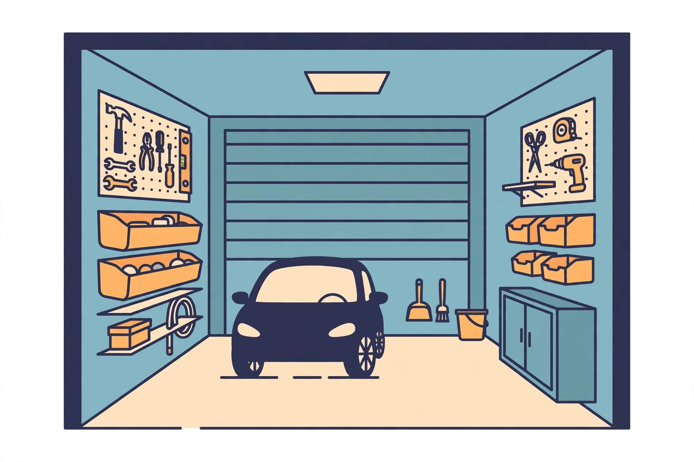
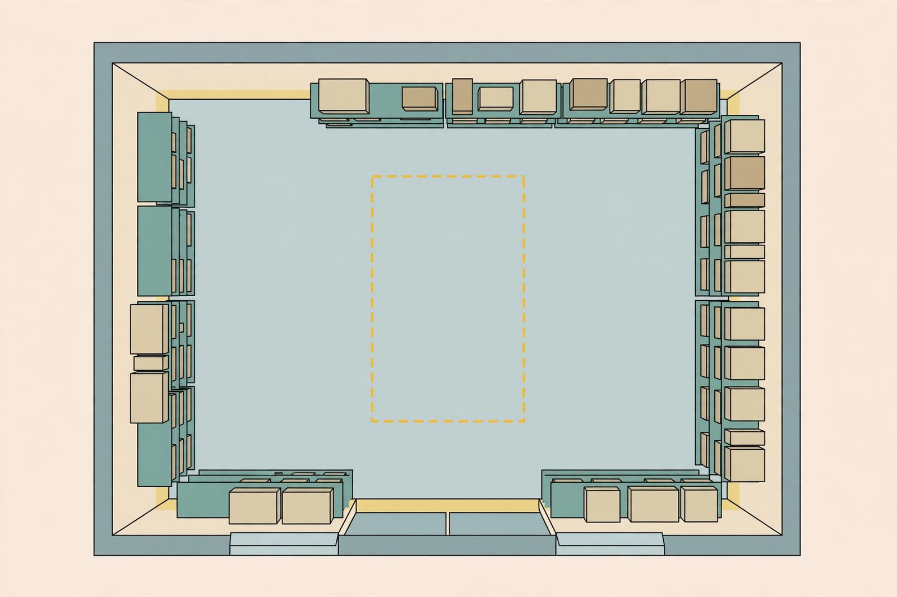

Organization that fits a tight single-car garage

A small garage doesn't organize like a big one. You can't just add another row of shelves when space runs out, because there is no other row. Small-garage organization is a different game: every centimeter has to earn its place, storage has to fold or float, and the hardest work isn't buying organizers — it's deciding what deserves to be inside at all.
Step 1: The inventory purge (the hard part)
In a two-car garage you can get away with storing things you might use. In a single-car garage, you can't. Before planning anything, pull everything out and sort it into three piles:
- Belongs in the garage: car-related items, tools you use on projects, lawn and garden gear, sports equipment in active use.
- Belongs elsewhere: holiday decorations in the attic, paint in the basement (garages freeze), camping gear in a closet, that box of cables in the office. Half the contents of most small garages are stored there by default, not by decision.
- Doesn't belong anywhere: broken tools, dried-up paint, the "mystery box" nobody will open. Let it go.
Be strict: a small garage holds roughly half what you think it holds once the car is inside. Everything that survives the purge gets a zone; everything else is already handled.
Go vertical — floor to ceiling
With the floor claimed by the car, small garages live on the walls and ceiling:
- Overhead racks: ceiling-mounted racks or a loft platform above the garage door tracks hold the deep-storage items — holiday bins, archived boxes, luggage — in space you'd otherwise never use. Keep them off to the sides so they never hang over the car, and load them with light bulky items, not anvils.
- Tall, shallow shelving: shelves 30 centimeters deep reach floor-to-ceiling without stealing parking space. Shallow is a feature: nothing gets lost behind other things, and you can't stack junk three deep.
- The back wall: the wall behind the car (or behind where it parks) is prime storage — it doesn't interfere with door swings. Put the workbench or main shelving there if it fits, but leave a clear walkway from the car to the house door.
Furniture that folds
A permanent workbench eats a permanent footprint. In a small garage, prefer things that collapse when the car needs the space:
- Wall-mounted fold-down workbenches give you a real work surface on project days and disappear flat against the wall when you're done. Make sure the wall and hinges are rated for the load — a workbench that folds down under weight is dangerous.
- Rolling carts serve as mobile tool storage and extra surface, then tuck into a corner or between shelves.
- Sawhorses with a door slab or plywood top are the budget workbench: set up in minutes, lean flat against a wall when done.
The principle: nothing in a small garage should have a full-time footprint that it only uses part-time.

Protect the car zone ruthlessly
Mark the car's footprint on the floor with tape — including door-swing space on both sides. Then defend it. Storage has a way of creeping past the tape line one bin at a time until you're squeezing sideways to open the driver's door. The tape makes the creep visible and gives everyone in the household a clear, enforceable boundary.
Keep a clear path from each car door to the house door. If you have to carry groceries, a sleeping child, or a week's worth of gear through the garage, that path is the most-used real estate in the building. It never gets storage. Ever.
Small-garage storage rules of thumb
- One deep, not two: never stack bins behind bins. If you can't reach it without moving something else, it will never get used or put back.
- Clear bins at eye level: in tight spaces you can't afford to pull three bins down to find one thing. Transparent fronts or labels on the visible side.
- Hooks over floors: brooms, leaf blowers, and extension cords hang on the wall by the door — the floor under them stays walkable.
- Corral the small stuff: small items in jars, bins, and divided trays. Loose smalls in a small garage become floor clutter in days.
Safety in tight quarters
Small garages concentrate risk: heavy overhead storage above where you walk, ladders squeezed between shelves, and no room to step back from a tipping object. Take it seriously: overhead racks get through-bolted into ceiling joists with rated hardware, not drywall anchors. Keep the total overhead load modest — holiday decorations and empty luggage, not toolboxes and paint. And keep a step stool instead of climbing shelves; in a tight garage, a falling person has nowhere good to land.
Also remember chemicals and fuel: small garages often double as storage for the mower's gas can or leftover paint. Keep fuel in approved containers, away from ignition sources and the water heater, and ventilate the space when working with anything solvent-based.